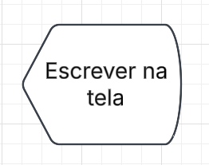
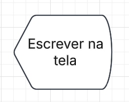
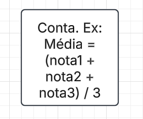
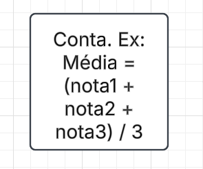
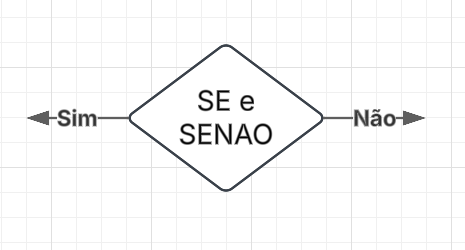
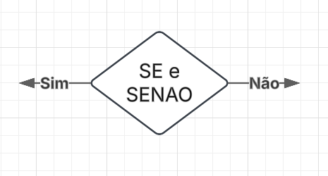

Um fluxograma é uma representação gráfica de um processo, sistema ou sequência de atividades, usada para mostrar como algo acontece passo a passo. Ele é composto por símbolos padronizados, conectados por setas, que indicam o fluxo das ações ou decisões. Em outras palavras: é um “desenho” que mostra o caminho que uma tarefa percorre — desde o início até o fim — facilitando a visualização, análise e melhoria de processos.
 



 

 

xxxx NÃO TA PRONTOO xxxxxxxxxxxxxxxxxxxxxxxxxxxxxxxxxxxx xxxxx NÃO TA PRONTOO xxxxxxxxxxxxxxxxxxxxxxxxxxxxxxxxxxxxxxxxxxxxxxxxxxxxxxxxxxxxxxxxxxxxxxxxxxxxxxxxxxxxxxxxxxxxxxxxxxxxxxxxxxxxxxxxxxxxxxxxxxxxxxxxxxxxxxxxxxxxxxxxxxxxxxxxxxxxxxxxxxxxxxxxxxxxxxxxxxxxxxxxxxxxxxxxxxxxxxxxxxxxxxxxxxxxxx xxxx NÃO TA PRONTOO xxxxxxxxxxxxxxxxxxxxxxxxxxxxxxxxxxxxxxxxxxxxxxxxxxxxxxxxxxxxxxxxxxxxxxxxxxxxxxxxxxxxxxxxxxxxxxxxxxxxxxxxxxxxxxxxxxxxxxxxxxxxxxxxxxxxxxxxxxxxxxxxxxxxxxxxxxxxxxxxxxxxxxxxxxxxxxxxxxxxxxxxxxxxxxxxxxxxxxxxxxxxxxxxxxxxxxxxxxxxx xxxx NÃO TA PRONTOO xxxxxxxxxxxxxxxxxxxxxxxxxxxxxxxxxxxxxxxxxxxxxxxxxxxxxxxxxxxxxxxxxxxxxxxxxxxxxxxxxxxxxxxxxxxxxxxxxxxxxxxxxxxxxxxxxxxxxxxxxxxxxxxxxxxxxxxxxxxxxxxxxxxxxxxxxxxxxxxxxxxxxxxxxxxxxxxxxxxxxxxxxxxxxxxxxxxxxxxxxxxxxxxxxxxxxxxxxxxxxxxxxxxxxxx
xxxxxxxxxxxxxxxxxxxxxxxxxx
xxxxxxxxxxxxxxxxxxxxxxxxxxxxxxxxxxxxxxxxxxxxxxxxxxxxxxxxxxxxxxxxxxxxxxxxxxxxxxxxxxxxxxxxxxxxxxxx
xxxxxxxxxxxxxxxxxxxxxxxxxxxxxxxxxxxxxxxxxxxxxxxxxxxxxxxxxxxxxxxxxxxxxxxxxxxxxxxxxxxxxxxxxxxxxxxxxxxxxxxxxxxxxxxxxxxxxxxxxxxxxxxxxx
xxxxxxxxxxxxxxxxxxxxxxxxxxxxxxxxxx
xxxxxxxxxxxxxxxxxxxxxxxxxxxxxxxxxxxx
xxxxxxxxxxxxxxxxxxxxxxxxxxx
xxxxxxxxxxxxxxxxxxxxxxxxxxxxxxxxxxxxxxxxxxxxxxxxxxxxxxxxxxxxxxxx
xxxxxxxxxxxxxxxxxxxxxxxxxxxxxxxxxxxxxxxxxxxxxxxxxxxxxxxxxxxxxxxxxxxxxxxxxxxxxxxxxxxxxxxxxxxxxxxxxxxxxxxxxxxxxxxxxxxxxxxxxxxxxxxxxxxxxxxxxxxxxxxxxxxxxxxxxxxxxxxxxxxxxxxxxxxxxxxxxxxxxxxxxxxxxxxxxxxxxxxxxxxxxxxxx


O Portugol Studio é um software educacional que permite aprender lógica de programação de maneira simples e didática, usando uma linguagem parecida com o português.
Ele é ideal para iniciantes, pois possibilita criar algoritmos utilizando comandos como `escreva` e `leia`, facilitando a compreensão de conceitos como variáveis, estruturas de decisão e repetição.
Com uma interface intuitiva, é possível escrever, testar e executar programas rapidamente, tornando o aprendizado mais visual e interativo.
O Portugol Studio é amplamente usado em escolas e cursos para ensinar lógica de programação antes de migrar para linguagens mais complexas como Python ou Java.

Variáveis
Uma variável é como uma caixinha que guarda informações que podem mudar durante a execução de um programa. Cada variável tem um nome e um tipo de dado (como número, texto ou verdadeiro/falso).
Exemplo:
idade = 18 → aqui a variável idade guarda o valor 18.
Depois você pode mudar: idade = 19.
Constantes
Uma constante também é uma caixinha que guarda informações, mas o valor dela não pode ser alterado depois de definido. Serve para valores que sempre serão os mesmos no programa.
Exemplo:
PI = 3.14159 → o valor de PI não muda.
TAXA_DE_JUROS = 0.05 → essa taxa é fixa e não pode ser alterada.
Em resumo: variáveis mudam, constantes não.
xxxx NÃO TA PRONTOOOOOOOOOOOOOOOO xxxxxxxxxxxxxxxxxxxxxxxxxxxxxxxxxxxxxxxxxxxxxxxxxxxxxx
xxxxxxxxxxxxxxxxxxxxxxxxxxxxxxxxxxxxxxxxxxxxxxxxxxXXX
XXXXXXXXXXXXXXXXXXXXXXXXXXXXXXXXXXXXX
XXXXXXXXXXXXXXXXXXXXXXXXXXXXXXXXXXXXXXXXXXXXXXXXX
XXXXXXXXXXXXXXXXXXXXXXXXXXXXXXXXXXXXXXXXXXXXXXXXxxxxx
xxxxxxxxxxxxxxxxxxxxxxxxxxxxxxx
xxxxxxxxxxxxx